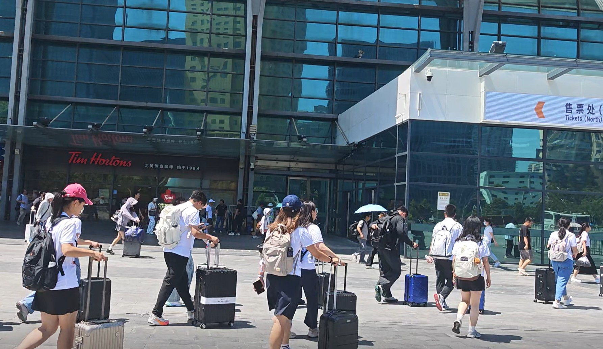

清晨的上海虹桥站已经人头攒动，拖着行李箱的旅客行色匆匆。站台上，高铁列车安静地停靠着，车身在晨光里泛着银白色的光。
我们拖着箱子找车厢、放行李，一切安顿好后坐下来，窗外的城市轮廓开始缓缓后退。上海的高楼渐渐远去，取而代之的是田野和村庄，车窗外的风景一点点变得陌生起来。三个多小时的车程，穿过江苏、进入安徽，当广播报出“前方到站，六安”时，大家都不约而同地坐直了身子，收拾东西准备下车。
回想进站的那一刻，我们都还未体会到，这趟从上海驶出的列车，会把我们带到那么多真实而厚重的人和事面前。
 山海有回声博医计划 · 实践纪实互动影像库浏览影像
山海有回声博医计划 · 实践纪实互动影像库浏览影像 实践现场 017 / 018
上海 · 虹桥站

清晨的上海虹桥站已经人头攒动，拖着行李箱的旅客行色匆匆。站台上，高铁列车安静地停靠着，车身在晨光里泛着银白色的光。
我们拖着箱子找车厢、放行李，一切安顿好后坐下来，窗外的城市轮廓开始缓缓后退。上海的高楼渐渐远去，取而代之的是田野和村庄，车窗外的风景一点点变得陌生起来。三个多小时的车程，穿过江苏、进入安徽，当广播报出“前方到站，六安”时，大家都不约而同地坐直了身子，收拾东西准备下车。
回想进站的那一刻，我们都还未体会到，这趟从上海驶出的列车，会把我们带到那么多真实而厚重的人和事面前。